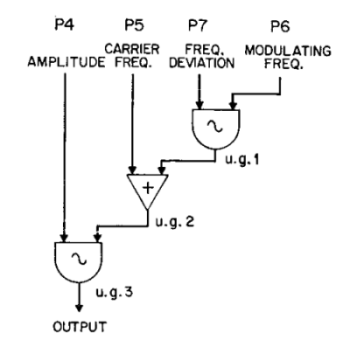
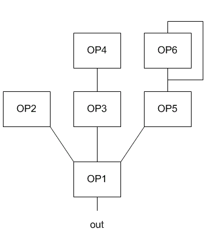

La synthèse par modulation de fréquence a pour origine les technologies de la communication. En effet, cette méthode est développée au début du XXe siècle pour améliorer les transmissions radio. Cependant, la modulation de la fréquence est aussi un effet musical traditionnel. Le vibrato consiste à faire varier la hauteur d’une note périodiquement. Dans le cadre de ces expérimentations avec des fréquences de vibrato extrêmes, John Chowning a découvert en 1973 qu’il est possible de créer des timbres riches de façon économe et d’en modifier simplement le contenu spectral.
Je découvrais que, avec deux sinusoïdales, je pouvais générer un grand nombre de sons complexes qui par d’autres moyens aurait demandé des outils beaucoup plus puissants et coûteux. Si vous souhaitez avoir, disons 50 harmoniques, vous devez avoir 50 oscillateurs. Et je n’utilisais que deux oscillateurs pour obtenir quelque chose de très similaire.
La technique basique de modulation de fréquence consiste à additionner la fréquence de la porteuse (une hauteur) à un signal de modulation pour varier périodiquement la hauteur. Cependant, la fréquence de modulation est élevée. On ne perçoit plus une variation de fréquence, mais un accroissement de la masse spectrale. Cette masse spectrale est contrôlée par l’amplitude donnée au signal modulant et dans ce cas, ce paramètre est appelé déviation fréquentielle.

Il est à noter que le rapport entre la fréquence de la porteuse et celle de la modulante a des conséquences sur l’organisation spectrale du signal de sortie. Si le quotient de ce rapport est égal à un nombre entier, le spectre généré par cette synthèse est alors harmonique.
Pour contrôler le taux de partiels intuitivement, Chowning propose d’utiliser un index de modulation, quotient du rapport entre la déviation fréquentielle et la fréquence de modulation. Cet index nous permet de fixer une masse spectrale indifféremment de la fréquence de modulation et il simplifie la variation de la masse spectrale d’un son au cours du temps.
À partir de 1983, la synthèse par modulation de fréquence a trouvé un débouché commercial remarquable avec la commercialisation du synthétiseur DX7 par la société Yamaha. Ce premier synthétiseur polyphonique entièrement numérique a marqué l’esthétique sonore des années quatre-vingt, aussi bien savante que populaire. Par exemple, Brian Eno dans Under stars (1983), Tristan Murail dans Atlantys (1984) ou le groupe norvégien A-ha dans Take On Me (1984) utilisent le DX7.
Dans la terminologie du synthétiseur DX7, un opérateur est un oscillateur et le DX7 est équipé de six opérateurs produisant exclusivement des ondes de forme sinusoïdale. Ces opérateurs sont utilisés pour générer du son ou pour moduler le paramètre de fréquence d’un autre opérateur, voire pour moduler aussi leur propre paramètre de fréquence par réinjection afin d’introduire un élément de résonance dans le son synthétisé.

Le plan de modulation entre les différents opérateurs n’est pas libre. Mais le DX7 dispose de trente-deux schémas d’interconnexion qui sont qualifiés d’algorithmes. Les fréquences de modulation dépendent du ratio entre un coefficient dédié à un opérateur et la fréquence porteuse sélectionnée au clavier par l’instrumentiste. Ces facteurs nous permettent de créer des spectres harmoniques ou inharmoniques. De plus, l’amplitude de chaque opérateur est contrôlée par un générateur d’enveloppe particulier qui dispose de huit paramètres pour déterminer l’amplitude et la durée de chaque segment de l’enveloppe. Par comparaison, une enveloppe standard de type ADSR est constituée de quatre paramètres.
La synthèse FM permet de produire des timbres riches et variés. Mais la mise en œuvre de cette technique de synthèse proposée par Yamaha demande de régler un grand nombre de paramètres et la gestion des réglages est organisée en menus qui sont structurés dans une arborescence. La valeur d’un paramètre est affichée sur un écran alphanumérique contenant deux lignes. Ce dernier permet donc de ne visualiser et de ne régler qu’un paramètre à la fois. L’utilisateur navigue dans cette arborescence de menus et d’options en appuyant sur quelques boutons poussoirs.
Par conséquent, le contrôle du DX7 est en rupture par rapport au mode de contrôle des synthétiseurs des générations précédentes. Avec le DX7, la création sonore et le déploiement des sons dans le temps sont deux étapes distinctes. L’utilisateur est en effet invité à préparer des timbres dans un premier temps et à les sauvegarder dans la mémoire du synthétiseur. Dans un second temps, l’utilisateur rappelle un timbre enregistré pour produire de la musique, mais il ne le crée pas et ne modifie pas ses paramètres en temps réel.
Le DX7 dispose d’un espace mémoire pour sauvegarder trente-deux timbres, mais cet espace mémoire est extensible par l’adjonction de cartouches. Toutefois, le DX7 est livré par défaut avec trente-deux préréglages. La complexité des réglages et le minimalisme de l’interface de contrôle ont eu pour conséquence que la majorité des utilisateurs du DX7 l’ont seulement utilisé avec l’aide des préréglages d’usine ou des préréglages proposés par des éditeurs tiers. Cet usage particulier de la synthèse a permis de faciliter et de démocratiser la synthèse sonore, mais a aussi formaté et restreint la diversité des timbres synthétiques dans la musique populaire. Les préréglages d’usine sont caractéristiques, notamment ceux qui imitent les timbres d’instruments mécaniques. Toutefois, une partie des musiciens privilégiant la vraisemblance des timbres ont préféré utiliser la synthèse par échantillonnage, technique que j'aborde dans la prochaine page.